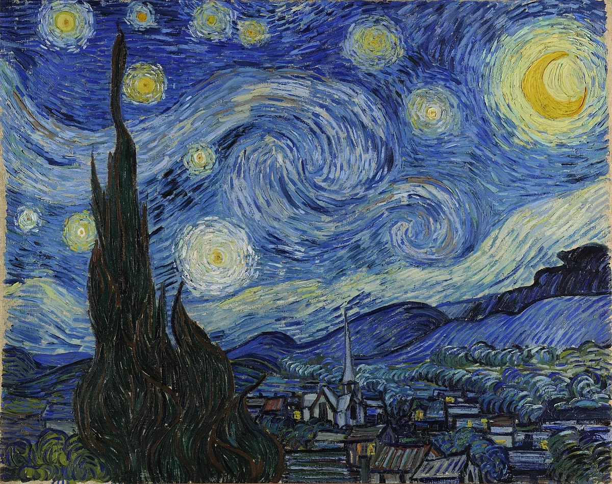
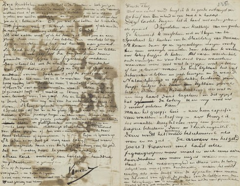
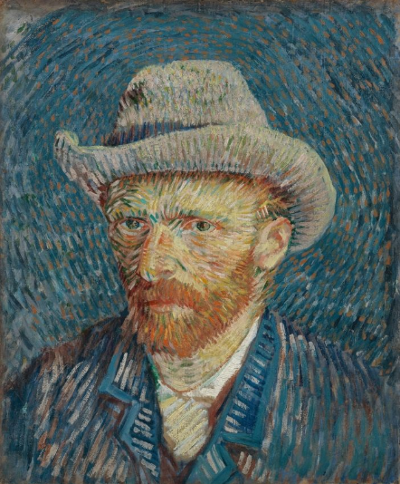

Vincent Van Gogh
Vincent van Gogh (1853–1890) is a world famous Impressionist painter.
Learn about his life, read his letters, or explore his paintings and drawings.
All here.

On the The Starry Night

On Van Gogh's letters

On Van Gogh's self-portaits